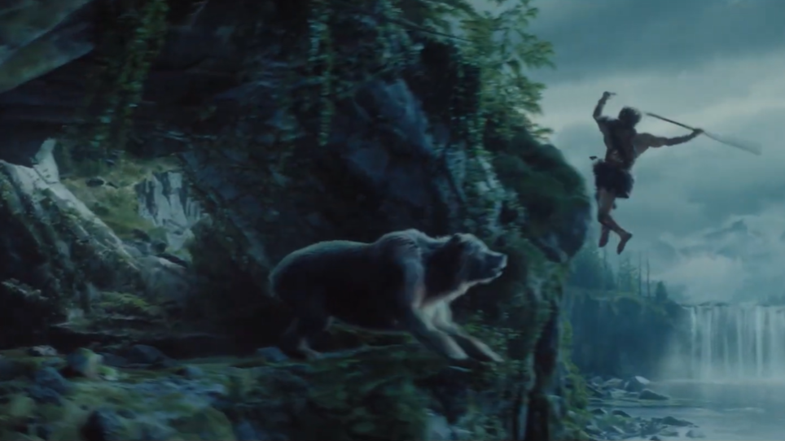
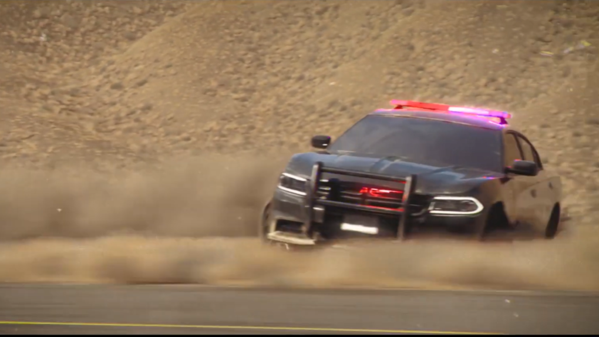
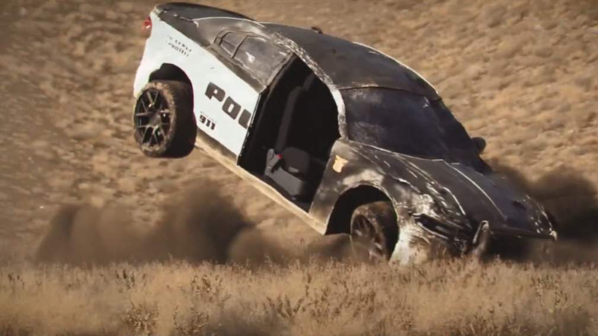
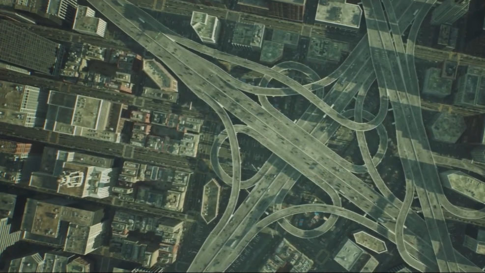
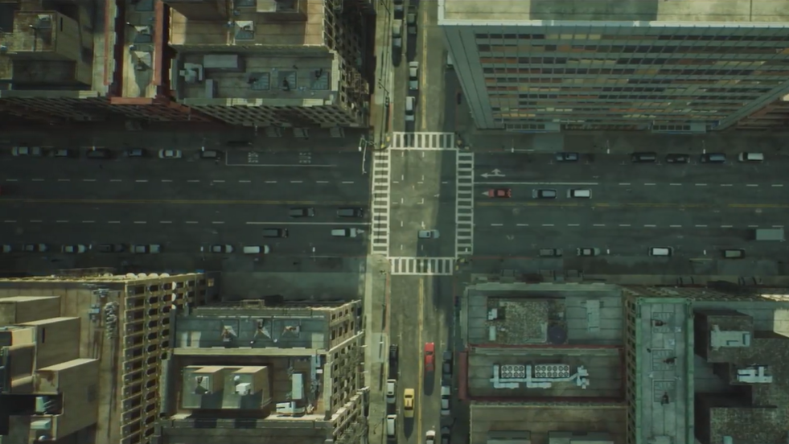
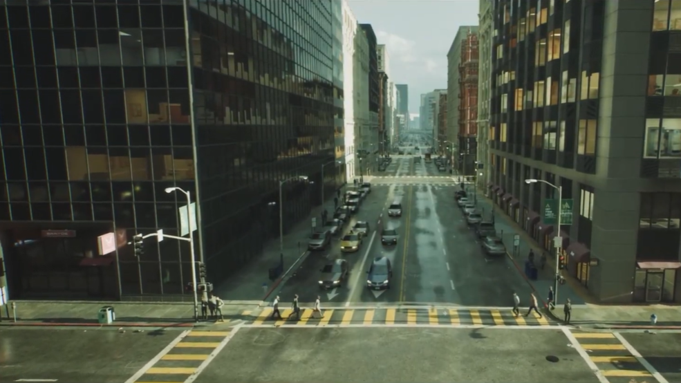
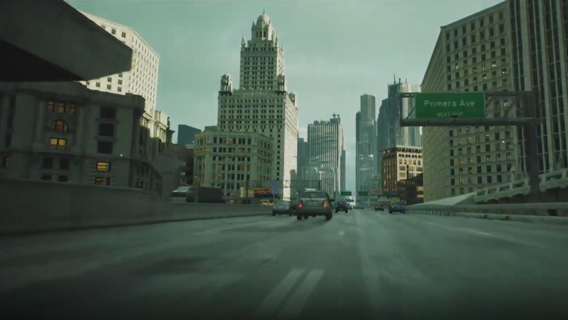
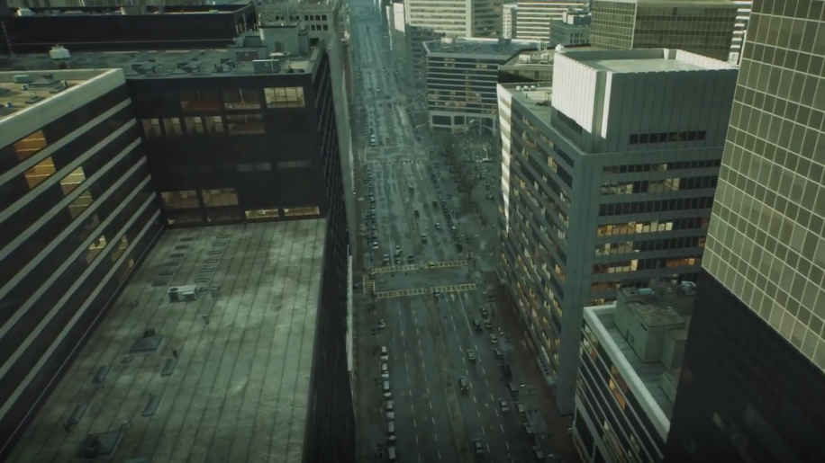

Concept and Visual Development
Concept exploration, creative direction, visual references and development planning aligned with the intended screen production.
FILM AND CINEMATIC PRODUCTION
AUTOTUBE CREW STUDIO provides creative and visual production support for film, entertainment and cinematic projects. Our capabilities connect creative development, pre-production planning, production execution and post-production.
Film and cinematic production require coordination between creative development, visual planning, production activities and technical finishing. Each stage contributes to translating the approved concept into screen-ready content.
PT Autotube Crew Studio brings together visual development, 3D animation, CGI, VFX and production capabilities for feature-film, entertainment and advertising requirements.
Each engagement is defined by its creative brief, production scope, schedule, technical specifications and agreed deliverables. Project credits, client associations and production histories are published only when verified and approved.
PRODUCTION CAPABILITIES
Production disciplines are selected according to the project brief, creative requirements, technical complexity and approved scope.
Concept exploration, creative direction, visual references and development planning aligned with the intended screen production.
Production breakdown, storyboards where required, visual preparation, scheduling and coordination of creative and technical requirements.
Coordinated production activities and visual execution according to the approved creative direction, production plan and project scope.
Editing, animation, CGI, VFX, compositing, visual refinement and preparation of final deliverables where included in the agreed scope.
FEATURE FILM PORTFOLIO
A selection of film-related visual assets from the studio's existing portfolio. These images are presented as portfolio material. Specific film titles, production credits, client associations and release information are not implied without verified details and publication approval.












PRE-PRODUCTION TO FINAL DELIVERY
Production stages are established for each assignment to align creative objectives, technical requirements, resources, review arrangements and final deliverables.
Review the brief, develop the concept, establish visual direction and prepare the required production plan and schedule.
Execute the approved creative and technical approach through the required production activities and specialist disciplines.
Complete the agreed editing, animation, CGI, VFX, compositing and finishing activities, followed by the required review.
Check the completed work against agreed specifications and prepare approved outputs in the required formats.
RELATED PRODUCTION SERVICES
Explore the specialist capabilities that can contribute to film, entertainment and cinematic production projects.
FILM AND CINEMATIC PROJECT ENQUIRIES
Share your creative concept, production requirements, technical scope and target schedule. AUTOTUBE CREW STUDIO welcomes enquiries from film production companies, animation studios and creative production partners.
Contact the Studio